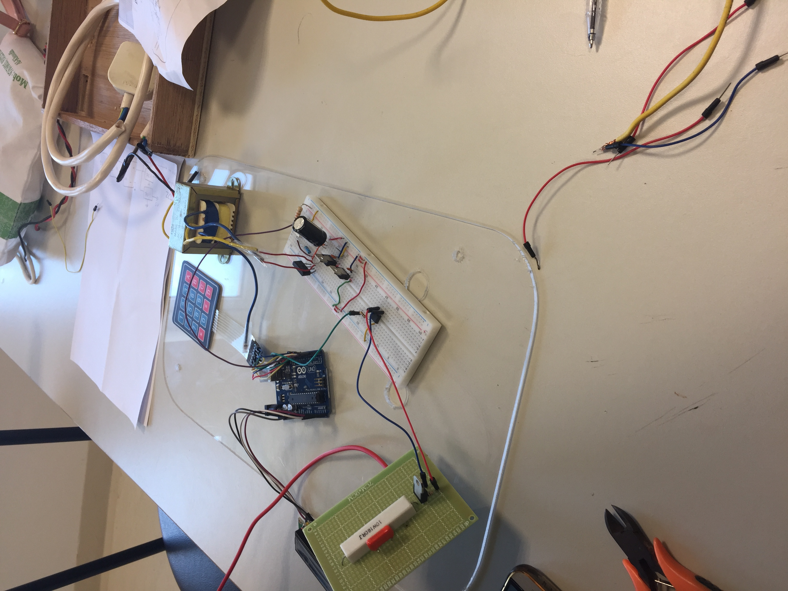

Fig.1 - Graduation project.
This project aims to produce a micro-controller based AC voltage controller This type of voltage controller can be used in lighting control,
electrical drives, and more. The input phase delay of the voltage controller is done precisely using a connected keypad. This way the output AC voltage is' exactly adjusted without any errors.